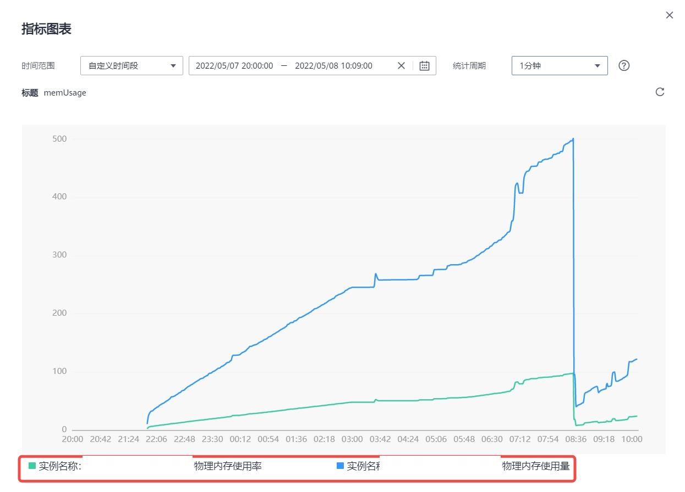
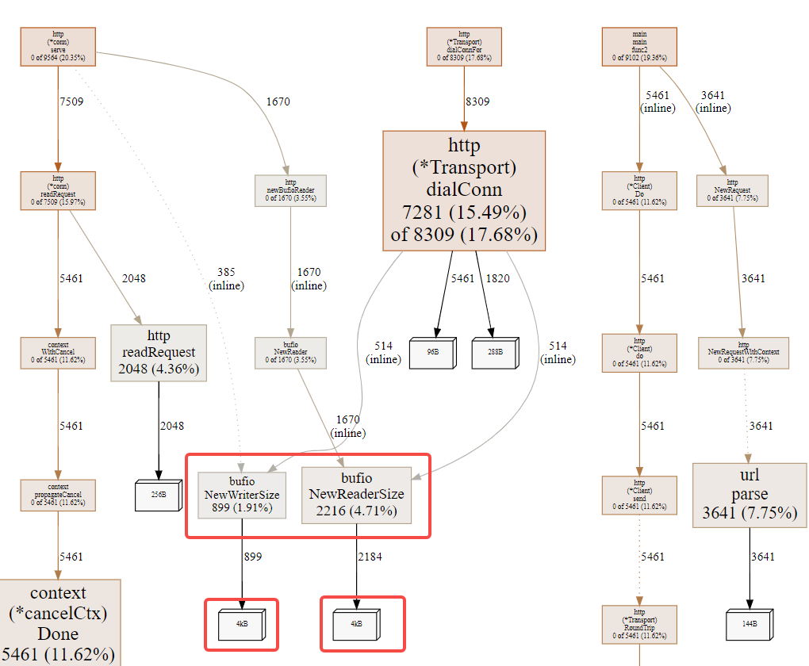
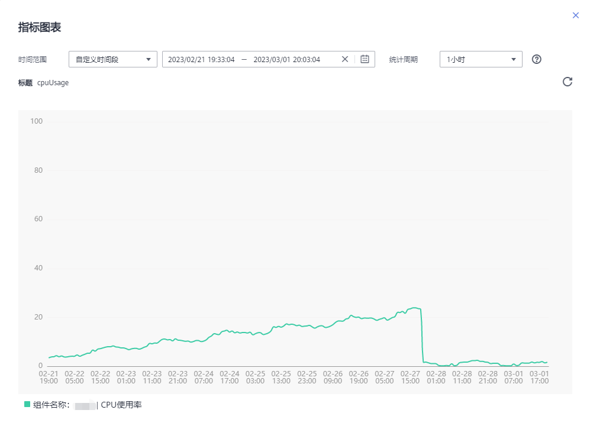
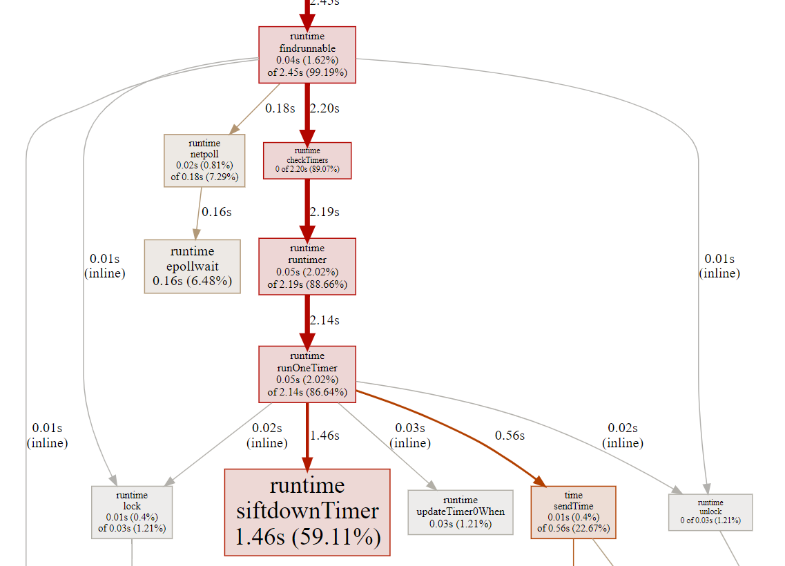

Golang-资源泄露
Golang-资源泄露
Lamber
2022-05-09
前言
本篇主要记录一些生产环境中遇到的各种资源问题，及对应的排查、解决方法。
1. HTTP-Body泄露（2022-05-09）
运维监控发现生产环境某服务所有节点出现OOM现象，但预发布、测试环境未出现该现象，初步判断内存泄露与请求数成正比关系。但该服务同时承载HTTP与gRPC请求，需要进一步排查。
- 下图5月7日内存泄露现象。

使用pprof工具采集测试环境服务内存使用信息，将采集后的信息下载到本地稍后分析。
1
curl -G <被测服务域名>/debug/pprof/heap > heap.profile使用go工具链绘制调用流程图。
1
go tool pprof -http :8111 ./profile

由图中可以发现http的newBufioReader后续操作存在内存泄露，查代码发现在http中间件中有对Body数据重置的情况，但没有关闭io.Reader，因此造成内存泄露。修复方法如下：
1
2
3
4defer func() {
_ = c.Request.Body.Close()
c.Request.Body = ioutil.NopCloser(bytes.NewBuffer(body))
}()但是光懂得Close()还不够，要理解为什么原来的Body没有被释放，这里涉及到bytes.Buffer的内部实现，在另外的文章记录。
2. 定时器泄露（2023-02-27）
- 运维监控发现生产环境某2个微服务的cpu有持续上升趋势，并在测试环境中有相同的现象，初步判断是有某种工具泄露。
- 下图2月28日前的cpu占用率是未修复前的现象，乘持续上升趋势，且该服务没有cpu密集型任务。27日下午修复后CPU占用率恢复正常。

使用pprof工具采集测试环境服务30秒的CPU使用信息，将采集后的信息下载到本地稍后分析。
- 我们的服务内嵌了pprof，使用白名单方式做安全限制。
1
curl <被测服务域名>/debug/pprof/profile --output ./profile使用go工具链绘制调用流程图。
1
go tool pprof -http :8111 ./profile

- 从图中发现占了86%CPU资源的是定时器，没有其他更有价值的线索了。并且只有2个服务出现该情况，排除是三方库导致的问题。于是定位该服务中所有使用定时器的地方。于是发现有一处代码循环创建定时器： time.NewTimer() ，但没有调用 Stop() 方法。
- 解决方式比较简单，使用 Reset() 方法每次重试定时器即可，这里不列出代码了；
- 相对于解决问题，认识定时器内部实现还比较重要。
Golang-资源泄露
https://lamber92.github.io/2022/05/09/golang/leak/